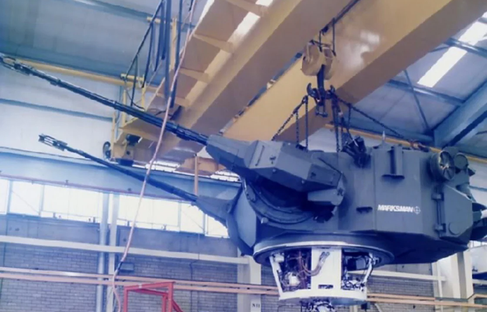

Marksman is a British short range air defense system developed by Marconi, consisting of a turret, a Marconi Series 400 radar and two Swiss Oerlikon 35 mm anti-aircraft autocannons. It is similar to the German Gepard system in terms of engine performance, ammunition carried and effective range of the ammunition.
The turret can be adapted to many basic tank chassis to create a self-propelled anti-aircraft gun. The only known major operator of the system to date is the Finnish Army, which ordered seven units in 1990. The turrets were fitted on Polish T-55AM tank chassis. The system is known as the ItPsv 90 in Finnish service Ilmatorjuntapanssarivaunu 90, Anti-Aircraft tank 90, the number being the year the tank entered service. It is considered a very accurate anti-aircraft artillery system, having a documented hit percentage of 52.44%.
In 2010, the Marksman systems in service in Finland were moved to war-time storage. In 2015 work began to install the system on the Leopard 2A4 chassis in order to make up for the loss of mobile anti-aircraft coverage when the Marksman was originally retired.